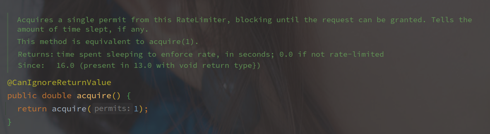
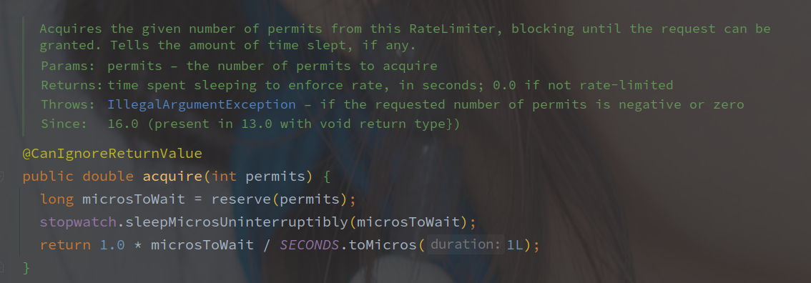
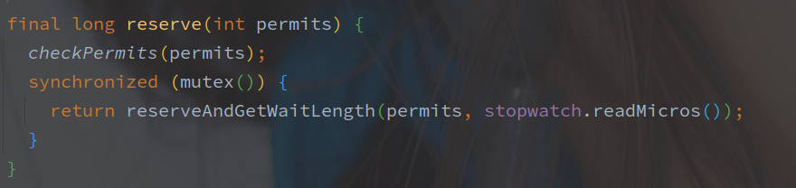
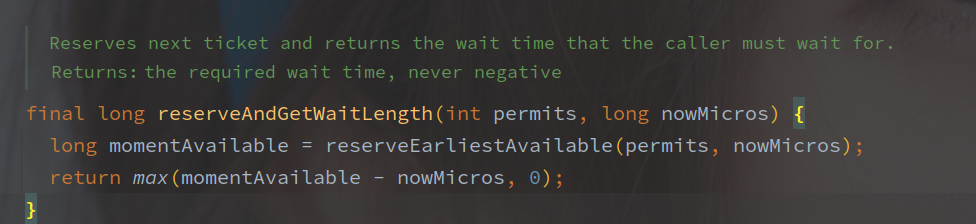

RateLimiter
[TOC]
概述
RateLimiter 是 Guava 工具包中的令牌桶限流器的实现。
Demo
相关组件
SleepingStopwatch
Stopwatch 是 Guava 中的计时器实现，SleepStopwatch 持有 Stopwatch 的引用来获取启动的时间以及线程的 Sleep。
源码分析
先从 acquire 看起，该方法是无超时的获取令牌。
这个调用链路有点长的，每个方法就几行。

直接调用的 acquire 方法，参数为希望的令牌数，默认为1。

reserve 方法用来获取 permits 可用的时间，而 SleepingStopwatch#sleepMicrosUninterruptibly 方法用来挂起线程直到可用，最后返回等待事件。
reserve 方法实现如下：

mutex 是以双重锁加载的单例 Object 对象，作为锁资源。
SleepStopwatch#readMicros 用来获取类启动到当前的时间戳

reserveEarliestAvailable 该方法在子类 SmoothRateLimiter 实现。
// SmoothRateLimiter#reserveEarliestAvailable
@Override
final long reserveEarliestAvailable(int requiredPermits, long nowMicros) {
// 该方法用来重新统计 permits 的数目
resync(nowMicros);
// 目前的
long returnValue = nextFreeTicketMicros;
// 需要消耗的 permit
double storedPermitsToSpend = min(requiredPermits, this.storedPermits);
// 需要等待的令牌数
double freshPermits = requiredPermits - storedPermitsToSpend;
// storePermitsToWaitTime 由子类实现
long waitMicros =
storedPermitsToWaitTime(this.storedPermits, storedPermitsToSpend)
+ (long) (freshPermits * stableIntervalMicros);
// 需要加上等待时间
this.nextFreeTicketMicros = LongMath.saturatedAdd(nextFreeTicketMicros, waitMicros);
// 当前令牌减去需要消耗的
this.storedPermits -= storedPermitsToSpend;
// 返回nextFreeTicketMicros
return returnValue;
}
/** Updates {@code storedPermits} and {@code nextFreeTicketMicros} based on the current time. */
void resync(long nowMicros) {
// if nextFreeTicket is in the past, resync to now
// nextFreeTicketMicros 就是上次获取 permit 的时间
if (nowMicros > nextFreeTicketMicros) {
// 计算产生的新的 permits 的数量
// coolDownIntervalMicros 为冷却时间，方法由子类实现
double newPermits = (nowMicros - nextFreeTicketMicros) / coolDownIntervalMicros();
// 求出当前的 permit 的数量
storedPermits = min(maxPermits, storedPermits + newPermits);
// 更新 nextFreeTicktMicros 的值
nextFreeTicketMicros = nowMicros;
}
RateLimiter 使用经过的时间来计算令牌的数目。